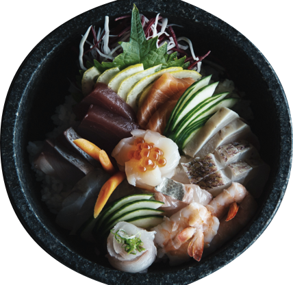
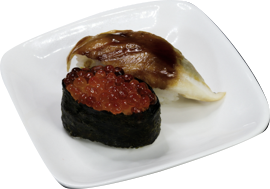
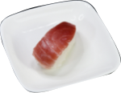
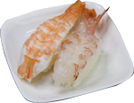

What is Sushi?




Nigirizushi (hand-shaped sushi) was first created in Edo during the late Edo period (early 19th century). Therefore, many Japanese people today think that Edomae-zushi refers to nigiri-style sushi invented in Edo, in comparison to Osaka-zushi, which refers to hakozushi (or o shizushi, box-pressed sushi). However, there was another meaning for its name that all seafood used for Edomae-zushi were freshly caught in the ocean in front (mae) of Edo.
and may think that they are a similar dish that uses raw fish. However, sushi is a different dish from sashimi in that it is always made with sumeshi, or vinegared rice. Sumeshi is actually an origin of the word sushi, and the sound of me gradually began to be omitted to become sushi. While there are many variations of sushi, including nigirizushi (a piece of seafood is placed on a bite-sized ball of vinegared rice), chirashizushi (a bowl of vinegared rice topped with a variety of seafood), and makizushi (seafood and vinegared rice roll wrapped with a sheet of nori seaweed), sushi always refers a combination of seafood and vinegared rice.